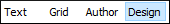

Design Editing Mode (XML Schema Diagram Editor)
XML Schemas allow document designers to specify the allowed structure and content of an XML document and to check if an XML document is valid. Oxygen XML Editor provides a simple and expressive XML Schema diagram editor (Design mode) for editing XML Schemas. The schema diagram helps both the content authors who want to understand a schema and schema designers who develop complex schemas.
The Design mode offers a diagram view of the XML Schema document by rendering all the XML Schema components. You can edit XML Schema component features directly within the diagram (for instance, the component name, its type, etc.), you can quickly navigate to the referenced definitions (elements, attributes, types, groups, etc.), and you can use drag-and-drop operations to move, copy, or make references. It also features some specialized helper views (such as the Palette view and Facets view) to further enhance the diagram editor, various contextual menu actions, validation support, and much more.
To switch to this mode, select Design at the bottom of the editing area. 
For more information about designing and editing XML Schemas, and all the details about the features that are available in the Design mode, see the Editing XML Schemas section and the Working with the XML Schema Design Mode (XML Schema Diagram Editor) subsection.